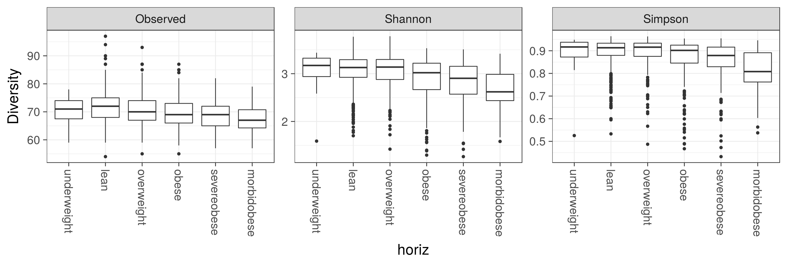

The data set from Lahti et al. Nat. Comm. 5:4344, 2014 has microbiota profiling of 130 genus-like taxa across 1006 normal western adults from Data Dryad. Load the data in R:
# Download the required R packages and then the HITChip Atlas data set
library(microbiome)
data(atlas1006)
# Let us give a generic name for this phyloseq data object,
# to be used further analysis
pseq <- atlas1006library(phyloseq)
div <- microbiome::diversity(pseq, measures = c("Observed", "Shannon", "Simpson"))
library(knitr)
kable(head(div))| Observed | Shannon | Simpson | |
|---|---|---|---|
| Sample.1 | 130 | 3.189726 | 0.9230387 |
| Sample.2 | 130 | 3.396135 | 0.9397719 |
| Sample.3 | 130 | 2.866104 | 0.8850959 |
| Sample.4 | 130 | 3.058653 | 0.9066459 |
| Sample.5 | 130 | 3.076850 | 0.9184565 |
| Sample.6 | 130 | 2.945709 | 0.8966565 |
p <- plot_diversity(pseq, variable = "bmi_group", measures = c("Observed", "Shannon", "Simpson"), detection = 250, na.rm = TRUE)
print(p)
## [1] "ade4"
## [1] "compositions"
## [1] "MASS"
## [1] "moments"
## [1] "scales"
## [1] "tgp"
## [1] "WGCNA"
## [1] "diptest"
## [1] "FD"
## [1] "gcookbook"
## [1] "GGally"
## [1] "ggnet"
## [1] "Hmisc"
## [1] "hrbrthemes"
## [1] "igraph"
## [1] "intergraph"
## [1] "limma"
## [1] "lme4"
## [1] "netresponse"
## [1] "network"
## [1] "RColorBrewer"
## [1] "sna"
## [1] "SpiecEasi"
## [1] "tidyverse"
## [1] "viridis"